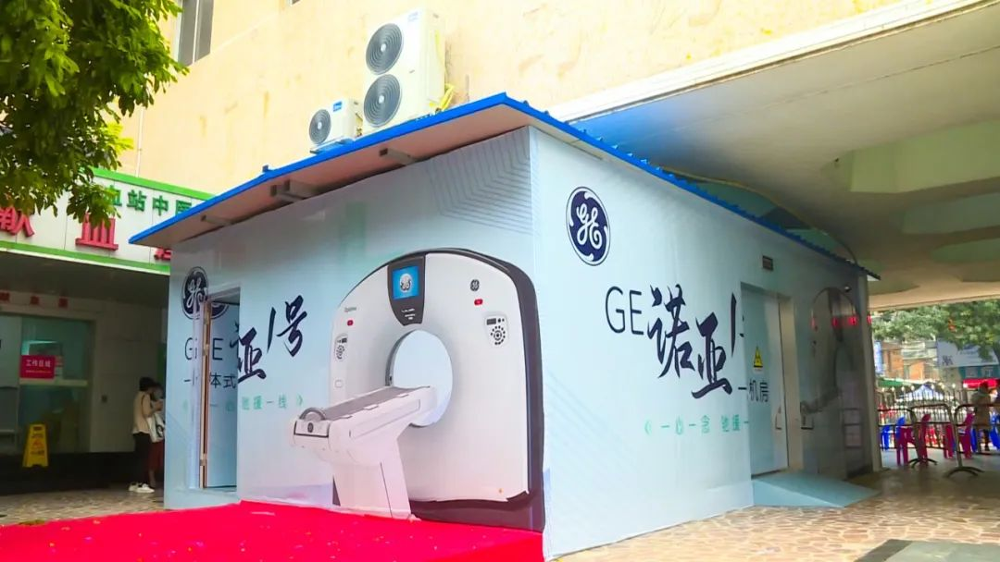
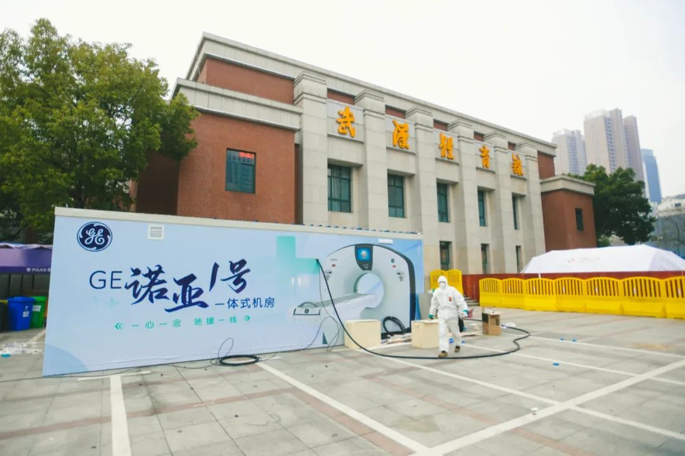

别信网络谣言了，真实的意大利防疫是这样的
原文链接 备份链接 本 文 约 3700 字 阅 读 需 要 8 min 在本文的开头，首先有必要让读者明白，作者的讲述绝非完全可信。 我在意大利住了十多年，又是媒体记者，这次意大利疫情爆发以后，很多媒体都来找我，甚至有人愿意出丰厚的稿 …
之前服务于方舱医院的GE医疗“诺亚一号” 一体式CT检查室，如今就在越来越多的医院落地。方舱医院的模式，也在湖北以外的更多省份开始走向常态化，为预防型公共卫生防疫体系的建设添砖加瓦。

作为团队里年龄最小的光头护士，国文霞在沌口方舱医院休舱后准备为伙伴们跳一段民族舞。殊不知，同事无意间拍摄下来的舞蹈片段，却在几天内火遍全网。
彼时，休舱后的医护人员正沉浸在喜悦之中，再经过一段时间的隔离观察，他们就可以返回家乡了。
3月18日下午四点，完成使命的国文霞随内蒙古驰援湖北医疗团队的同批队友们平安抵达鄂尔多斯市。她说，自己最大的愿望就是在疫情结束后，能带着爸妈去海南玩几天。
自3月17日开始，承担方舱医院任务的援鄂医疗队陆续撤离。从2月5日开始接收患者，直至3月10日全部休舱，武汉16家方舱医院累计收治了12000多位新冠肺炎患者。
在武汉的疫情防控中，方舱医院起到的作用显而易见。以至于方舱医院全部休舱之后，有人提出了这样的假设：方舱医院提早10天建立，可以减少多少交叉感染和患者死亡？
从疫情爆发初期“医疗挤兑”的群体焦虑，到相对有序地应对，中间有一个很重要的差别，就是方舱医院的开放。
在中国工程院副院长、中国医学科学院北京协和医学院院校长王辰看来，像这种能够迅速提供大容量收治，短时间、低成本建设起来的方舱医院，在将来设计国家应急体系乃至世界应急体系时，都有一定借鉴意义。他提到，方舱医院可转化为国家常态备急方案。
由于方舱医院的临时性和空间特殊性，普通医院的设备（尤其是大型专用设备）短时间内难以移植，移动、便携、操作快速简便的医疗设备，价值开始凸显。
为抗击疫情紧急研发的一些移动式高端医疗设备，在方舱医院中经过实践检验之后，甚至拓展到更多的使用场景。
之前服务于方舱医院的GE医疗“诺亚一号” 一体式CT检查室，如今就在越来越多的医院落地。方舱医院的模式，也在湖北以外的更多省份开始走向常态化，为预防型公共卫生防疫体系的建设添砖加瓦。
*非疫情核心区*
*首套移动一体式CT检查室落地佛山*
尽管国内疫情的高峰已过，新冠肺炎的“全球大流行”却致使输入病例不断出现。目前，海外新冠肺炎累计确诊患者已超过十万，在举全国之力渡过疫情高峰期后，中国接下来则要严防海外输入病例扩散的风险，抗击疫情丝毫不能放松。
为保证发热门诊发热患者胸部CT筛查工作需要，强化疫情防控和临床诊疗工作，避免漏诊导致疫情蔓延，近日，广东省佛山市中医院在发热门诊前快速安装了一台GE的“诺亚1号”一体式CT检查室，并已经投入使用。
这是全国非疫情核心区域投入使用的首个满足发热门诊与疫时隔离区影像检查需求的“诺亚一号”落地案例，更是在保障疫情防控的基础上，开始以主动预防型思维升级发热门诊的典型代表。

△广东省佛山市中医院正式引入“诺亚1号”一体式CT检查室
对此，广东省佛山市中医院相关负责人表示，“虽然国内疫情高峰已过，但我们仍不能有丝毫大意，由于佛山是制造业大市，随着复工复产人员的增多，发热病人胸部CT筛查的需求量也越来越大，我们希望利用多种途径和技术，进行有效排查，严把防控关，以防疫情死灰复燃，保障广大市民的生命安全。”
在应对当下疫情的同时，引入移动一体式CT检查室也是为了升级医疗基础设施、规范疾病诊疗流程，从而为建设预防型公共卫生防疫体系打好基础。据佛山市中医院党委委员、副院长徐志强介绍，目前，该院正在建设预防型公共卫生防疫体系的路上先行先试。他提到，“对于我们长期的、灵活和快速应对公共卫生难题来讲，这样的医疗基础设施价值非常大。”
抗击疫情时能“披甲上阵”，日常诊疗中能增强医疗服务补给，可谓“召之即来，来之能战“的移动一体式CT检查室，正是佛山市中医院建设预防型公共卫生防疫体系的重要一步。
*科技助力，弥补基层公卫体系短板*
近几年，我国医改的重点之一是推行“分级诊疗”，而“强基层”是落实“分级诊疗”的关键。新冠疫情期间，基层医疗暴露出一些短板。一方面，基层的各方面基础医疗设备、诊治能力亟需进一步加强；另一方面，各地单独隔离院区不足和县级医院发热门诊建设不足的问题也较为突出。
本次疫情爆发后，除武汉紧急建设了火神山、雷神山医院和16个方舱医院外，全国已有20多个省近60家医院建设了单独隔离院区，大的院区，如小汤山、深圳三院是千床级，其他的都是几十到几百床位不等。
这些大大小小的医疗单位，为缓解疫情期间的隔离救治压力提供了保障。专家认为，未来几年，发热门诊、单独隔离院区的建设，将是基层公共卫生体系建设的重要组成部分。
与此同时，这些医疗机构将会产生大量的医疗设备和耗材需求，如额温枪、小型生化/免疫检测仪、CT、呼吸机、便携超声、血球仪、传染防护耗材等，相关医疗设备市场将进一步扩容。
值得注意的是，与额温枪等小型的医疗设备不同，CT等大型设备价格不菲，搭建过程也可谓费时费力。
据GE医疗产品经理刘秋实介绍，一般情况下，医院在购买CT后，还要配套做好CT室的装修，包括照明、空调、屏蔽设置等，需要投入很多的人力物力。但面对突发公卫事件，时间和物资都无比紧缺，医院无法在短时间内按照传统的流程完成CT室的搭建。
如果为每一个隔离区和发热门诊提前搭建好CT室，又很容易造成医疗资源的浪费。
在这种情况下，该如何满足突发的CT需求呢？移动一体式CT检查室或是一个性价比较高的解决方案。
刘秋实提到，“诺亚1号”一体式CT检查室虽然是在此次疫情期间紧急研发出来的，但是这种交钥匙型CT影像检查解决方案，不受场地限制，可以快速构建于感染楼下或发热门诊旁，做到“即到即扫”。设备抵达医院后，只需要医生到岗就能开始检查，不需要再额外投入任何人力和物力。疫情结束后，医院还可按新的发展规划，将“诺亚1号”仓体进行移动，更改它的位置。

△“交钥匙”的整合型移动CT产品可以做到“即到即扫”
“这样的产品，在县医院这类基层医疗机构配备使用，高效、便捷，还可以根据医院的建设需求做移动，使用上比较灵活。”刘秋实说道。
据了解，从GE团队接到佛山市中医院的产品需求，到生产运输，再到产品正式投入使用，中间仅仅隔了不到10天的时间。这样的速度，是传统CT室远远无法做到的。
* 临危受命，装机使用速度远超传统CT室*
2020年2月19日，国家卫健委发布的《新型冠状病毒肺炎诊疗方案（试行第六版）》，把影像学检查纳入了诊断的标准之一。在新冠肺炎患者出院标准中，除了临床诊断、体温及核酸检测结果外，CT影像数据也是硬性指标。
一时之间，疫区对于CT的需求激增。但传统的CT室却无法在短时间内完成搭建。
2月27日，在湖北省武汉市硚口区武汉体育馆方舱医院里，GE医疗的“诺亚1号”一体式远程方舱CT正式投入使用。

△武汉市硚口区武汉体育馆方舱医院里，“诺亚1号”已经历过实践的检验。（健闻特约摄影师杜禹甫拍摄）
在“诺亚1号”到来后，患者们不用再通过专车分批运送到指定医院检查CT以及取片，CT检查可以在方舱医院内完成，且8秒就可以扫描完毕，单个患者可节省30%的扫描时间，而后专家可远程对片子进行诊断，减少医生和患者的接触。此举不仅大大缩短CT检查时间，还降低了交叉感染的可能。
值得一提的是，“诺亚1号”箱体内配置了天眼功能，可实现病人自行躺床后给病人进行智能定位检查；还能实现检查间和操作间完全隔离，确保医患安全性，防止交叉感染的发生。相比传统的医生肉眼定位，“诺亚1号”借助3D传感设备、深度算法，让患者做检查时身体器官的定位变得更精准，流程也更简单。
据GE相关负责人介绍， “诺亚1号”平均每天可为300位患者提供检测服务。极大提升了疫情期间的CT检查效率，缓解了诊断压力。
*后新冠时期的未雨绸缪*
病毒从来不会消失，而是长期与人共生。SARS、MERS、埃博拉……每一次疫情爆发，都会带来不小的生命和经济损失。假若下一次疫情袭来，我们有什么办法减少伤亡和损失？
工欲善其事，必先利其器。在此次新冠疫情期间，方舱医院的建设，为患者的隔离救治分散了不小的压力。未来，如果有更多的基层医疗机构能够配置用于传染病预防、检测的一些设备，同时提前筹划相应学科的人培养和储备，我国面对突发的公共卫生事件，也势必会更加从容。
如开篇提到的佛山市中医院，在“诺亚1号”正式入驻后，该移动CT将专人专机，对新冠肺炎疑似病例和有重点地区流行病学史的发热患者，开展胸部CT筛查工作，而普通患者则继续使用原有CT进行检查，由此可大大缓解CT检查排队等候的状况，既保障医院其他医疗救治工作有序开展，又为新冠肺炎综合防控提供强有力的保障。
待疫情过后，“诺亚1号”又将作为不可或缺的预防型应急储备，在各种重大突发事件、公共卫生事件中继续发挥作用。
医疗设备是建设预防型公共卫生防疫体系的必要组成，但我们要做的远不止于此。
此前，经济学家黄奇帆曾公开表示，新冠肺炎疫情爆发固然对我国社会经济造成了损失，但从发展角度，也不失为一个推动改革的重要契机。“像修铁路、高速公路一样，修建中国公共卫生领域的基础设施，政府主导的医疗机构的高质量设备投入就是一个巨大的增量市场，能够极大带动经济的发展。”
在此次抗击疫情的过程中，GE医疗不仅紧急研发出了“诺亚1号”，也针对未来预防型公共卫生体系防疫建设的一些需求，策划了一个持续性的辅助建设计划——诺亚行动（Noah Action，N 计划）。该计划包含设备技术方案、线上Education+远程培训、发热门诊临床路径建议等一系列内容。
目前看来，无论是政府有关部门、专家学者，还是医疗行业人士，都已经开始将目光放得更长远，致力于建设预防型公共卫生防疫体系。或许此次疫情，将成为我国公共卫生应急管理建设大发展的重要节点。

八点健闻Plus，聚焦健康商业报道。
商务合作
上海：leslee 13916263824
北京：Jessie 13911125922
原文链接 备份链接 本 文 约 3700 字 阅 读 需 要 8 min 在本文的开头，首先有必要让读者明白，作者的讲述绝非完全可信。 我在意大利住了十多年，又是媒体记者，这次意大利疫情爆发以后，很多媒体都来找我，甚至有人愿意出丰厚的稿 …
原文链接 备份链接 受疫情期间影响，多地医保快速开通互联网医疗支付业务，但这距离行业的春天或许还远，长期的“医保份额”划定仍是瓶颈，找到其他的买单方也在探索期 文 |《财经》记者 辛颖 俞燕 编辑 | 王小 “我印象最深的线上问诊的提问 …
原文链接 备份链接 疫情危机再一次提醒我们，在公共卫生方面，从政府、社会到公众，我们还有很多功课未能完成。 作者 | 朱纪明 程峰（清华大学医学院公共健康研究中心） 编辑 | 徐菁菁 药物和疫苗不一定“特效” 身在疫情中，大众的期待是特效 …
原文链接 备份链接 跳广场舞、练瑜伽、打太极、复习备考……每天我们都能从社交媒体上了解到武汉“方舱医院”内患者们的日常生活。这些看似平常的活动，却为紧张的抗疫工作带来了一丝活力与鼓舞。 2月3日晚，武汉市宣布将在武汉国际会展中心、洪山体育 …
原文链接 备份链接 今天，湖北卫健委消息，武汉市新冠肺炎确诊人数，0，新增疑似，0，现有疑似，0。 “没有什么胜利可言，挺住意味着一切。”在漫长的冬天和半个春天之后，我们终于等到了这个我们之前的人生里，从来不曾期待过的数字。 今天，武汉确 …